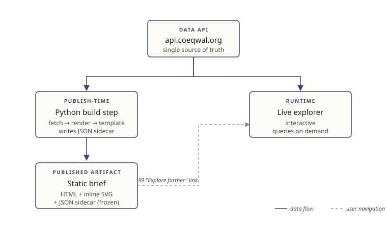

How a published brief page gets from the data API to coeqwal.org. Last updated: 2026-06-10
Context
The COEQWAL stack is described in coeqwal_project_ecosystem.md — a Next.js 15 static-export website, a FastAPI backend at api.coeqwal.org, and a PostgreSQL data platform feeding it. This document covers a narrower question: how individual brief pages (theme, LOI, strategy) are produced and published.
Briefs are version-locked editorial artifacts. Once a brief version is published, its content does not change — even if the backend data does. A new version is cut explicitly, by the team, when the team decides one is needed.
Pipeline

What each box does
api.coeqwal.org — the single source of truth for all COEQWAL data. Documented at /docs (OpenAPI). Briefs read from it once at publish time, never at view time.
Python build step (publish-time). When a new brief version is cut, the build step:
- fetches the scenarios, LOIs, sector tier results, and statistics the brief needs from the API
- renders the brief's figures as inline SVG
- fills the brief's HTML template with values and figures
- writes a JSON sidecar (
{brief-id}_v{N}.json) capturing every value used in the brief, the scenario IDs, the API endpoints called, and the API response timestamp — the sidecar is the audit record - outputs
{brief-id}_v{N}.html+{brief-id}_v{N}.jsoninto the website repo as static assets
Static brief (published artifact). A fully self-contained HTML file: text, figures, and styles inline. Served by the website with no server-side rendering and no runtime API calls. Works offline. Prints to PDF cleanly. Frozen until the next version is cut.
Live explorer (runtime). The interactive surface on the main site. Queries api.coeqwal.org on demand. Not produced by this pipeline; included in the diagram because briefs link into it.
§9 hand-off (user navigation). Each brief's §9 "Explore further" link is a deep link into the live explorer, pre-configured with the brief's scenario context. This is how a reader transitions from a frozen reference to live exploration.
Where the brief lives in the website repo
The Python build step writes the brief HTML and JSON sidecar into the website repo as static assets. Likely path TBD with the web team. Candidate: apps/main/public/briefs/{brief-id}_v{N}.{html,json}. Next.js serves them as static files; no rendering happens at site build time.
Versioning
- Brief files are named
{brief-id}_v{N}.html. Version increments only when the team cuts a new version. - The unversioned URL (e.g.
/briefs/baselines) points to the highest publishedv{N}. - Old versions remain reachable at their versioned URL — public, citable, frozen.
- If backend data changes (a tier result is revised, a scenario updated), affected briefs are flagged for review but do not auto-update.
What is not in this pipeline
- Live data in the brief. Briefs never call the API at view time. If a value needs to be live, it belongs in the explorer.
- Per-user customization. Briefs are the same for every reader.
- Personalization, filters, interactivity. Those live in the explorer.
During prototype phase
Eric is currently authoring brief content in HTML by hand, using MATLAB to look at the data. Values are typed in directly. This is fine for prototypes. When the Python build step is built, the same HTML templates can be parameterized and the manually-typed values come out of the JSON sidecar instead. The MATLAB pipeline is not in the production loop.
Provenance note (2026-06-03): the prototype CSV (coeqwal-viz/data/coeqwal_data_hc_continuous.csv) mixes real API-derived integer tiers with synthetic fractional values and a synthetic HC3 (gap-fill layers in fetch_tier_data.m). It is prototype-figure material only and is not an input to this pipeline. The production build step reads from the API exclusively.
Build approach (agreed 2026-06-04; build started 2026-06-06)
Status 2026-06-09: all three builder stages are built. Stage 1 (2026-06-06): cache-first API client, hydroclimate/brief config, data layer, verification stage, CLI (build.py fetch | summary | verify); real Folsom data cached (72 scenarios), headline numbers recomputed and independently verified. Stage 2 (2026-06-06 evening): Jinja2 template extracted from LOI brief v0.6 (builder/templates/loi_brief.html.j2), shared computed structure (compute.py), build.py render with rendered-output verification. Stage 3 (2026-06-06 night): JSON sidecar emission (briefbuilder/sidecar.py) per builder/SIDECAR_SCHEMA.md, emitted only on a passing build; verify.verify_sidecar independently recomputes every value and payload hash from the raw cache (tamper-tested). Dev briefs + sidecars for Folsom and Shasta build end-to-end from real cached data in builder/output/. Details in coeqwal-briefs NOTES 2026-06-06 and 2026-06-07.
The build step proceeds now against the live API; the data-platform team's incoming results (per-location continuous tier values, hydroclimate set) land as data-only changes. Agreed shape:
- Python package in the coeqwal-briefs repo — an API client that caches every raw response to disk (the cache is the sidecar's audit trail: endpoints, timestamps, payloads), a data layer assembling editorial structures, and Jinja2 templates derived from the LOI brief v0.6 HTML. No CSV inputs anywhere.
- Structural mappings encoded once: strategies assembled across hydroclimates via
sibling_group; hydroclimate codes mapped in one config table (historical→BL,cc50→HC1,cc95→HC2). Templates take the hydroclimate list as data — a new hydroclimate becomes a new column without a code change. - First milestone: Folsom LOI brief built end-to-end from real data, integer tiers and all. Headline counts recomputed from the real 72-scenario set; scenario names and descriptions from
/api/scenarios. Figures render in the same tier-space geometry with dots at integer positions — coarse until continuous values arrive. v0.6 stays as the design reference for the continuous-data end state. - Verification stage from day one: every emitted number traced to a cached API response; prose claims (tier ranges, counts) recomputed at build time; the build fails on any mismatch.
- When continuous tiers and the next hydroclimate land, only fixtures and data change; figure code and templates already handle them.
Open design question: do real-data dev builds keep all nine sections with coarse integer figures (current lean), or hold the Section 4 figure until continuous data exists? — resolved 2026-06-06 (Eric): all nine sections, Figure 2 rendered coarse at integer positions and clearly marked, so the full pipeline is exercised now and continuous data lands as a data-only change.
Data evolution and the August lock (added 2026-06-10)
The API's data changes while the platform team finishes their work (examples from the 2026-06-10 audit: salmon abundance went from unserved to served; the community-water-systems location count moved from 124 to 75). The data is expected to lock in early August 2026; launch is September 3. Discipline until then:
- Builds compare against dated snapshots, never against "the API."
builder/api_watch.py snapshotsaves the full API state (every scenario's tier and location data, plus the scenario and indicator lists) tobuilder/snapshots/YYYY-MM-DD/with a comparable fingerprint;api_watch.py checkreports drift between the live API and the latest snapshot;api_watch.py diffcompares two snapshots. Snapshots are committed, so the drift history lives in the repo. A weekly automated check reports drift; a manual check before any build session is cheap. - At the lock, one final snapshot is taken and labeled; from then through launch, all brief builds read from that snapshot only, making every build reproducible against a fixed reference.
- Scheduling flag: the brief timeline's content freeze (July 29) currently precedes the estimated data lock (early August). Either the lock moves ahead of the final build week, or one planned regeneration-and-verify pass runs after the lock, before September 3. To be settled with the team.
Open items
JSON sidecar schema per brief type— schema v0.1 decided and emission built 2026-06-06. Schema atcoeqwal-briefs/builder/SIDECAR_SCHEMA.md; Eric's review resolved same day (keep wildcard sources; numbers only, not generated prose; sidecar version 1:1 with the brief HTML; §1 exclude-BL counting signed off). Theme and strategysubjectblocks remain to be exercised when those brief types reach the builder.- Exact path in the website repo for the brief assets — confirm with web team
Owner of the Python build step— resolved 2026-06-06: it lives in the coeqwal-briefs repo atbuilder/(Eric's side, not the data-platform or website repo)Hydroclimate id mapping— resolved 2026-06-06:/api/scenariosserves numerichydroclimate_id; 2→historical, 3→cc50, 4→cc95 confirmed via the team's Completed Scenario Listing spreadsheet (archived incoeqwal-briefs/builder/reference/). Encoded once inbuilder/briefbuilder/config.py.- Two further hydroclimates are run but not yet in the API (per the same listing, 2026-06-06): TaiESM1 (s0107–s0131) and EC-Earth3-Veg (s0133–s0157; s0148 skipped) — the library is heading to ~119 runs across 5 hydroclimates. Supersedes the 72-vs-96 question below: the column-count decision is now about 5 hydroclimates, and one strategy has a gap under EC-Earth3-Veg.
- §9 deep-link URL scheme — pending per
COEQWAL_Discoverability_Strategy.md§5 - Hydroclimate reconciliation — investigated 2026-06-03, now two concrete gaps rather than a naming question. The API serves 24 strategies × 3 hydroclimates (
historical, cc50, cc95= editorial BL, HC1, HC2) — 72 scenarios. Editorial HC3 and the briefs' 96-scenario framing have no counterpart in the modeled library; HC3 in the prototype CSV was synthesized. Decide: briefs drop to 3 hydroclimate columns, or a third warmer-drier run is added. - Per-location continuous tier values do not exist in the platform — the API serves integer
tier_levelper location only. The continuous tier value underlying the brief figures (decomposition, Figure 2) is a prototype invention via MATLAB gap-fill. The build step needs either a real continuous-tier methodology served by the API (plausibly interpolating the same exceedance statistics the tier thresholds use) or a brief redesign around ordinal tiers. Per Eric (2026-06-04) the data-platform team already has continuous tier values and the hydroclimate set in progress; the build step should be written so these slot in as data-only changes.
Cross-references
coeqwal_project_ecosystem.md— production code and data infrastructureCOEQWAL_Briefs_Concept.md— brief implementation surfaceCOEQWAL_Discoverability_Strategy.md— citable-surface strategy